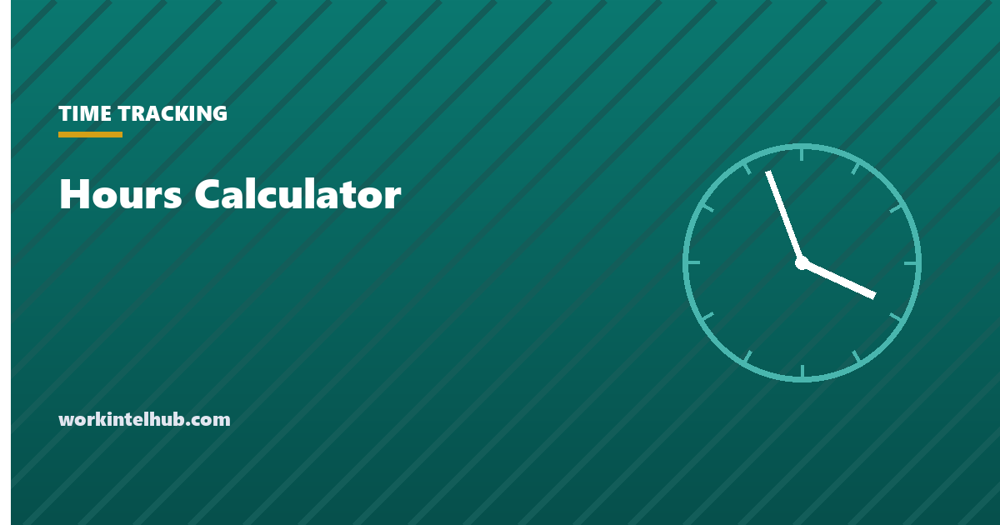

Hours Calculator

Enter a start time, an end time and any unpaid break, and the calculator gives the hours worked in hours and minutes and as a decimal. Add rows for more shifts and it totals them, flags anything over 40 hours, and copies the result as text.
Below the calculator: how the arithmetic works if you need to do it by hand, which breaks can be deducted and which cannot, and where to go when you need a whole week or a pay figure rather than a duration.
Hours calculator
| # | Start | End | Break (min) | Hours |
|---|
An end time earlier than the start is treated as the next day. Results show hours and minutes and the decimal that payroll uses. Nothing you enter leaves this page.
Doing it by hand
- Write both times in 24-hour form. 8:15 am is 08:15; 4:45 pm is 16:45.
- Convert each to minutes: hours times 60, plus minutes. 08:15 is 495; 16:45 is 1,005.
- Subtract: 1,005 minus 495 is 510 minutes. If the end is smaller than the start, add 1,440 to the end first because the shift crossed midnight.
- Remove the unpaid break: 510 minus 30 is 480.
- Divide by 60: 8.00 hours. Or express it as hours and minutes: 8 h 00 min.
The decimal is what payroll multiplies by the rate, and it is where hand calculations go wrong: 7 hours 30 minutes is 7.50, not 7.30, and 7 hours 20 minutes is 7.33. The conversion chart lists every minute value, and our guide to calculating hours worked covers the method with worked examples.
Which breaks come off
Only unpaid, bona fide meal periods are deducted. Under 29 CFR 785.19 a meal period is ordinarily 30 minutes or more and the employee must be completely relieved of duty; someone eating at their desk while answering the phone is working. Under 29 CFR 785.18, rest breaks of 5 to 20 minutes are paid and "must be counted as hours worked", so they are never entered in the break column. If you are calculating for payroll and the person worked through lunch, the break is zero.
Common shifts, already worked out
| Shift | Unpaid break | Hours worked | Decimal |
|---|---|---|---|
| 9:00 am to 5:00 pm | None | 8 h 00 min | 8.00 |
| 9:00 am to 5:00 pm | 30 min | 7 h 30 min | 7.50 |
| 9:00 am to 5:30 pm | 30 min | 8 h 00 min | 8.00 |
| 8:30 am to 5:00 pm | 60 min | 7 h 30 min | 7.50 |
| 7:00 am to 3:30 pm | 30 min | 8 h 00 min | 8.00 |
| 6:00 am to 6:00 pm | 30 min | 11 h 30 min | 11.50 |
| 10:00 pm to 6:00 am | 30 min | 7 h 30 min | 7.50 |
| 11:00 am to 2:00 pm and 5:00 pm to 10:00 pm | None (split shift) | 8 h 00 min | 8.00 |
The first two rows are the most common source of dispute: "nine to five" is eight hours only if lunch is paid or eaten while working. With a 30-minute unpaid lunch it is 7.5, and a week of it is 37.5, not 40. Whether that lunch can be unpaid at all is the question the breaks section above answers. The last row is a split shift, which in California carries a premium on top of the hours.
When you need more than a duration
- A whole week with rounding and overtime: the time card calculator.
- Overtime pay from the regular rate, including bonuses and differentials: the overtime calculator.
- A quick 1.5x or 2x figure: the time and a half calculator.
- Working days and hours in a year: the 2027 working days page.
Key takeaways
- Convert both times to minutes, subtract, remove unpaid meal breaks, divide by 60.
- An end time before the start time means the shift crossed midnight: add 24 hours to the end.
- Minutes are not decimals. 7 hours 30 minutes is 7.50; 7 hours 20 minutes is 7.33.
- Only unpaid meal periods of about 30 minutes or more, with the employee fully relieved, are deducted. Rest breaks of 5 to 20 minutes are paid.
- Over 40 hours in a workweek is overtime under federal law; some states add daily thresholds.
Frequently asked questions
How do I calculate hours between two times?
Convert both to 24-hour time, turn each into minutes past midnight, subtract the start from the end, take off any unpaid meal break, and divide by 60. The calculator above does this for one or many shifts and shows the result in hours and minutes and as a decimal.
How do I calculate hours worked overnight?
If the end time is earlier than the start time, add 24 hours to the end before subtracting. A 22:00 to 06:00 shift is 06:00 plus 24 hours, minus 22:00, which is 8 hours. The calculator handles this automatically.
How do I convert hours and minutes to decimal hours?
Divide the minutes by 60 and add to the hours. 8 hours 45 minutes is 8 plus 45 divided by 60, which is 8.75. Fifteen minutes is 0.25, thirty is 0.50, and ten minutes is 0.17.
Do I subtract lunch from hours worked?
Only if it was an unpaid meal period of about 30 minutes or more during which the employee was completely relieved of duty. Working lunches and short rest breaks of 5 to 20 minutes are paid time and stay in the total.
What is 7.5 hours in hours and minutes?
7 hours 30 minutes. The decimal part is a fraction of an hour: 0.5 hours is 30 minutes, 0.25 is 15 minutes, and 0.75 is 45 minutes.